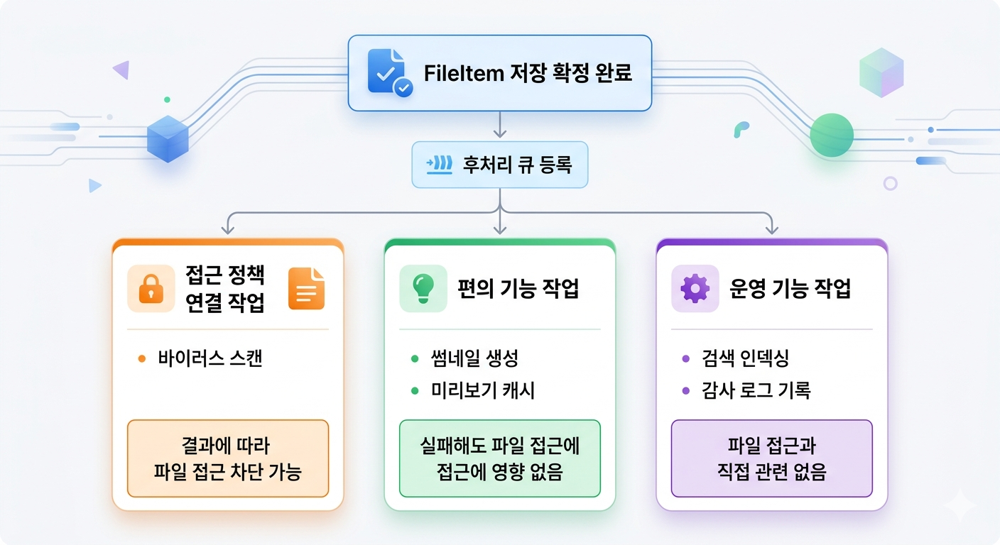

후처리 결과와 파일 접근 정책 연결¶
1. 개요¶
1.1 목적¶
본 문서는 FileItem 생성 완료 이후 수행되는 후처리 작업의 결과가 파일 접근 정책에 어떻게 반영되는지를 정의한다. 후처리 결과는 단순 부가 정보가 아니라, 다운로드 파이프라인의 사전 검증 단계에서 참조하는 정책 값으로 관리된다.
1.2 적용 범위¶
| 구분 | 항목 |
|---|---|
| 후처리 대상 작업 | 이미지 썸네일 생성, 텍스트/PDF 미리보기 캐시, 바이러스 스캔, 검색 인덱싱, 감사 로그 기록 |
| 접근 정책 연결 대상 | 바이러스 스캔 결과, 썸네일/미리보기 생성 결과 |
| 연결 지점 | 다운로드 파이프라인 사전 검증 단계 |
1.3 전제 조건¶
FileItem저장 확정이 완료된 상태에서 후처리가 시작된다.- 후처리는 큐 기반 또는 비동기 방식으로 수행된다.
- 다운로드 파이프라인은 세션 발급 전 사전 검증 단계에서 파일 메타데이터,
storage_key, 삭제·손상·비활성·격리 상태, 다운로드 정책 차단 여부를 확인한다.
2. 후처리 작업과 파일 상태 관계¶
2.1 후처리 작업 분류¶

2.2 작업별 접근 정책 영향도¶
| 후처리 작업 | 실패 시 파일 접근 차단 여부 | 실패 시 FileItem 상태 전환 | 비고 |
|---|---|---|---|
| 바이러스 스캔 | 차단 | quarantined 전환 |
감염 탐지 또는 스캔 엔진 오류 포함 |
| 이미지 썸네일 생성 | 차단하지 않음 | 상태 전환 없음 | 플레이스홀더 표시로 대체 |
| 텍스트/PDF 미리보기 캐시 | 차단하지 않음 | 상태 전환 없음 | 플레이스홀더 표시로 대체 |
| 검색 인덱싱 | 차단하지 않음 | 상태 전환 없음 | 검색 결과 누락 가능 |
| 감사 로그 기록 | 차단하지 않음 | 상태 전환 없음 | 운영 모니터링으로 처리 |
3. 바이러스 스캔 정책¶
3.1 스캔 완료 전 다운로드 허용¶
FileItem이 최종 생성되고 저장 확정이 완료되었다면, 바이러스 스캔이 PENDING 또는 진행 중 상태이더라도 다운로드 세션 발급 대상이 될 수 있다.
정책 근거
- 업로드 파이프라인은
FileItem생성 이후 후처리 큐를 등록하며, 바이러스 스캔은 후처리 작업 중 하나로 비동기 수행된다. - 스캔 완료는 저장 확정의 선행 조건이 아니라, 저장 완료 이후의 후속 처리다.
- 스캔 결과가 나오기 전까지는 정상 파일로 간주하되, 감염 또는 스캔 실패 결과가 나오면 즉시 접근 정책에 반영한다.
3.2 스캔 결과별 처리 정책¶
┌──────────────────┐
│ 바이러스 스캔 시작 │
└────────┬─────────┘
│
├─── PENDING(대기 중) ────→ 다운로드 허용
│ (정상 파일로 간주)
│
├─── CLEAN(스캔 성공) ────→ 정상 접근 유지
│ (상태 변경 없음)
│
├─── INFECTED(감염 탐지) ──→ quarantined 전환
│ → 다운로드 즉시 차단
│
└─── FAILED(스캔 실패) ───→ quarantined 전환
→ 다운로드 즉시 차단
| 스캔 상태 | 다운로드 허용 여부 | FileItem 상태 전환 | 외부 응답 |
|---|---|---|---|
PENDING |
허용 | 전환 없음 | 정상 다운로드 응답 |
CLEAN |
허용 | 전환 없음 | 정상 다운로드 응답 |
INFECTED |
차단 | quarantined |
404 Not Found |
FAILED |
차단 | quarantined |
404 Not Found |
3.3 quarantined 상태 정의¶
quarantined는 다음 상황에 적용하는 FileItem 상태값이다.
| 적용 조건 | 설명 |
|---|---|
| 악성 코드 또는 감염 징후 탐지 | 스캔 엔진이 악성 코드를 식별한 경우 |
| 스캔 엔진 오류 또는 후처리 실패 | 파일 안전성을 신뢰할 수 없다고 판단한 경우 |
| 운영 정책상 격리 대상 분류 | 관리자 또는 자동화 규칙에 의한 격리 |
3.4 다운로드 파이프라인 연결¶
다운로드 파이프라인의 사전 검증 단계는 기존에 삭제·손상·비활성·격리 상태를 차단 대상으로 정의하고 있다. quarantined는 격리 상태에 해당하므로 다운로드 차단 상태로 직접 연결된다.
다운로드 요청
│
▼
사전 검증 단계
│
├── 파일 메타데이터 확인
├── storage_key 존재 여부 확인
├── 삭제 상태 확인 ────────────→ 차단 (404)
├── 손상 상태 확인 ────────────→ 차단 (404)
├── 비활성 상태 확인 ──────────→ 차단 (404)
├── 격리(quarantined) 상태 확인 → 차단 (404) ◀── 바이러스 스캔 결과 반영 지점
├── 다운로드 정책 차단 여부 확인 → 차단 (404)
│
▼
모든 검증 통과 시 다운로드 세션 발급
외부 응답 통일 원칙:
quarantined파일에 대한 다운로드 요청은 기존 원칙대로404 Not Found로 응답한다. 차단 사유를 외부에 노출하지 않는다.
4. 썸네일 및 미리보기 정책¶
4.1 기본 원칙¶
썸네일 생성과 미리보기 캐시 생성은 편의 기능으로 분류한다. 이들 작업의 실패는 파일 자체의 저장 실패로 취급하지 않으며, 파일 접근 차단 사유가 되지 않는다.
4.2 실패 시 사용자 경험 처리¶
| 실패 유형 | 사용자 화면 처리 | 원본 파일 접근 |
|---|---|---|
| 썸네일 생성 실패 | 기본 아이콘 또는 대표 플레이스홀더 이미지 표시 | 다운로드 가능 |
| 미리보기 생성 실패 | 미리보기 영역에 실패 안내 또는 기본 플레이스홀더 표시 | 다운로드 가능 |
4.3 사용자에게 유지되는 정보¶
썸네일 또는 미리보기가 실패하더라도 사용자는 다음 정보를 확인하고 원본 다운로드를 수행할 수 있다.
- 파일명
- 파일 크기
- 업로드 시각
- 기타
FileItem메타데이터
5. 클라이언트 상태 표시¶
5.1 응답 포함 원칙¶
업로드 완료 후 상태 조회 응답 또는 파일 메타데이터 응답에는 후처리 상태를 별도 필드로 포함한다. 스캔 결과, 썸네일/미리보기 상태, 접근 가능 여부를 클라이언트가 구분할 수 있어야 한다.
5.2 응답 예시¶
정상 업로드 직후 (스캔 대기 중, 미리보기 실패)
{
"fileItemId": 987,
"scanStatus": "PENDING",
"previewStatus": "FAILED",
"thumbnailStatus": "FAILED",
"accessStatus": "DOWNLOADABLE"
}
scanStatus가PENDING이지만accessStatus는DOWNLOADABLE→ 스캔 완료 전 다운로드 허용 정책 반영previewStatus,thumbnailStatus가FAILED이지만 접근 차단 없음 → 편의 기능 분리 정책 반영
감염 탐지 또는 스캔 실패 시
{
"fileItemId": 987,
"scanStatus": "FAILED",
"fileStatus": "QUARANTINED",
"accessStatus": "BLOCKED"
}
scanStatus가FAILED→fileStatus가QUARANTINED로 전환accessStatus가BLOCKED→ 다운로드 세션 발급 차단
5.3 필드 의미 정의¶
| 필드 | 설명 | 예시 값 |
|---|---|---|
scanStatus |
바이러스 스캔 진행 상태 | PENDING, CLEAN, INFECTED, FAILED |
previewStatus |
미리보기 캐시 생성 상태 | PENDING, COMPLETED, FAILED |
thumbnailStatus |
썸네일 생성 상태 | PENDING, COMPLETED, FAILED |
fileStatus |
FileItem 상태 | ACTIVE, QUARANTINED, DELETED 등 |
accessStatus |
다운로드 가능 여부 | DOWNLOADABLE, BLOCKED |
참고: 위 필드명은 구현 예시이며, 실제 필드명은 프로젝트의
FileItem메타데이터 구조에 맞게 조정할 수 있다.
5.4 필드 간 일관성 원칙¶
| 원칙 | 설명 |
|---|---|
| 스캔 결과와 접근 차단 상태는 분리 가능하되 일관되게 연결 | scanStatus가 INFECTED/FAILED이면 accessStatus는 반드시 BLOCKED |
| 미리보기 실패는 다운로드 가능 여부와 분리 | previewStatus/thumbnailStatus가 FAILED여도 accessStatus는 DOWNLOADABLE 가능 |
| 격리 상태는 다운로드 차단과 직접 연결 | fileStatus가 QUARANTINED이면 accessStatus는 반드시 BLOCKED |
6. 상태 전이 흐름 요약¶
FileItem 저장 확정 완료
│
├──→ 바이러스 스캔 큐 등록 (scanStatus: PENDING)
│ │
│ ├── 스캔 완료, 정상 ──→ scanStatus: CLEAN
│ │ fileStatus: 변경 없음
│ │ accessStatus: DOWNLOADABLE
│ │
│ ├── 감염 탐지 ────────→ scanStatus: INFECTED
│ │ fileStatus: QUARANTINED
│ │ accessStatus: BLOCKED
│ │
│ └── 스캔 실패 ────────→ scanStatus: FAILED
│ fileStatus: QUARANTINED
│ accessStatus: BLOCKED
│
├──→ 썸네일 생성 큐 등록 (thumbnailStatus: PENDING)
│ │
│ ├── 생성 완료 ────────→ thumbnailStatus: COMPLETED
│ │ accessStatus: 영향 없음
│ │
│ └── 생성 실패 ────────→ thumbnailStatus: FAILED
│ accessStatus: 영향 없음
│ UI: 플레이스홀더 표시
│
└──→ 미리보기 캐시 큐 등록 (previewStatus: PENDING)
│
├── 생성 완료 ────────→ previewStatus: COMPLETED
│ accessStatus: 영향 없음
│
└── 생성 실패 ────────→ previewStatus: FAILED
accessStatus: 영향 없음
UI: 플레이스홀더 표시
7. 운영 원칙 요약¶
| # | 원칙 |
|---|---|
| 1 | FileItem 저장 확정 완료 후 후처리는 비동기로 수행한다. |
| 2 | 바이러스 스캔 완료 전 파일 다운로드는 허용한다. |
| 3 | 바이러스 스캔 실패 또는 감염 탐지 시 파일 상태는 quarantined로 전환한다. |
| 4 | quarantined 파일은 다운로드 파이프라인의 사전 검증 단계에서 차단한다. |
| 5 | quarantined 파일에 대한 외부 응답은 404 Not Found로 통일한다. |
| 6 | 썸네일·미리보기 생성 실패는 파일 저장 실패나 접근 차단으로 보지 않는다. |
| 7 | 썸네일·미리보기 생성 실패 시 사용자 화면에는 플레이스홀더를 표시한다. |
| 8 | 후처리 상태는 클라이언트가 조회 가능하도록 응답에 포함한다. |